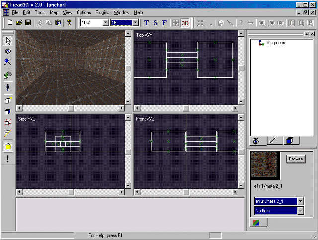
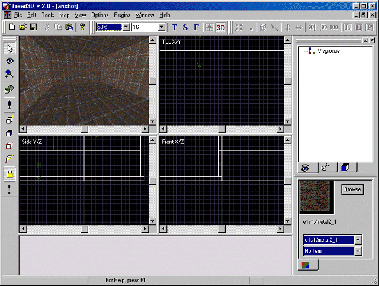
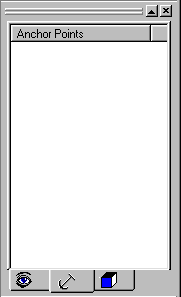
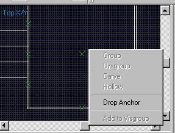
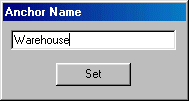
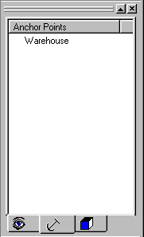
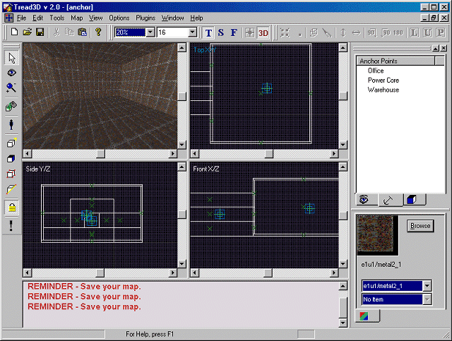

This is a walk-through as how to use Anchors.
Before starting this tutorial you should first get acquainted with the basics of the "Tread3D" editor; the screen and the various commands that are available.
As in the previous tutorials start "Tread3D".
Now load or build the largest map you can think of.
For example we have constructed a very large but simple map.
Your screen may look like the one below.

You will notice that the grid size is set to 16 units but it is very hard to see the spacing.
Increase the magnification to 50%.
Your screen may look like the one below.

Now you can see the grid but a clear definition of the overall map is lost.
Also, everytime the map is loaded it will be "Centered" in the Editor Workspace elements.
This is what "Anchors" are used for.
Anchors allow you to "Name" and "Warp" to certain areas of your map.
Now lets click on the Anchors Button in the Object Workspace.
The Object Workspace should now look like the one below.

You will see that there is no listing of anchors.
Lets now "Drop Anchor.
In the example map we have three rooms. The "Warehouse", "Power Core" and "Office".
We will put an "Anchor" in each room.
First navigate to a room in which you want to place an Anchor.
Lets start at the "Warehouse" area.
Now pick a location for the Anchor.
Now right mouse-click on the spot you have picked for the Anchor.
A new options menu will now appear.
The options menu should look like the one below.

Now scroll down to "Drop Anchor".
The "Anchor Name" window should now appear.
The "Anchor Name" window should look like the one below.

Now just type in the name of your Anchor.
In this example we will name the Anchor 'Warehouse".
The "Anchor Name" window should look like the one below.

Now just click the "Set" button.
You will notice that the new Anchor is listed in the Object Workspace.
The Object Workspace should now look like the one below.

You will also notice that there is a blue box in your map.
These boxes are the Anchors.
Your screen may look like the one below.

Now put in the other two Anchors.
(The Power Core and Office)
To "Warp" from one Anchor to another just double click on the Anchor name in the Object Workspace.
Now some important notes:
There is no limit on the amount of Anchors.
Anchors can be manipulate after they are placed in a map.
(Just click-hold-drag the Anchor)
Thats all there is to it.
What you have done is "Placed an Anchor into your map".
Now resave your work.